Version 1.1 · översatt artikel
Importera, exportera, kopiera och skicka robotinställningar i RoboCam
Skärmbilderna är från originalartikeln och visar appens ryska gränssnitt; texten beskriver varje skärm på svenska.
Den förra artikeln om RoboCam beskrev hur man styr en EV3-robot i förstaperson. Men robotar och mekanismer kan se olika ut och var och en behöver sin egen styrning. Om du har utvecklat en ny robot uppstår frågan hur du delar dina inställningar med andra, för över dem till en annan telefon eller helt enkelt kopierar dem. Det finns en lösning: i den nya versionen av RoboCam har funktionerna import, export, kopiering och sändning av robotinställningar lagts till.
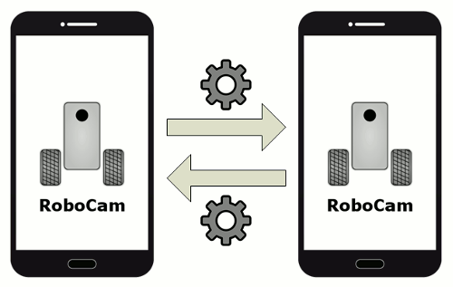
Den här artikeln beskriver de nya funktionerna i version 1.1 av RoboCam. Alla artiklar om RoboCam finns här. Du kan installera RoboCam från Google Play, eller från spegeln APKPure om du vill ha en APK att installera manuellt.
Exportera inställningar till en fil
Först tittar vi på hur man exporterar inställningar. Öppna RoboCams inställningar genom att trycka på den grå knappen till höger.
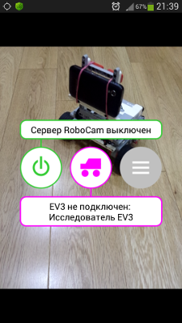
Välj sedan avsnittet «Robot».
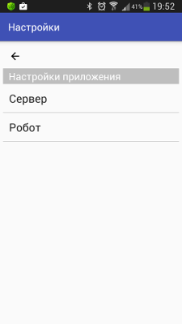
Välj de inställningar du vill exportera, till exempel «EV3 Explorer».
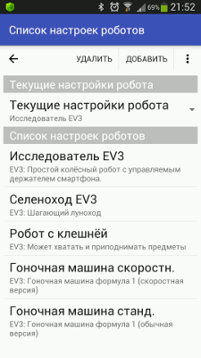
När robotens inställningar visas på skärmen, tryck på knappen med tre punkter uppe till höger och välj «Exportera till fil» i menyn som visas.
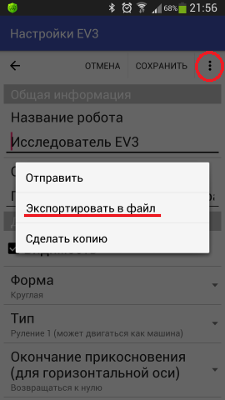
Om du har Android 6 eller senare kan du få en begäran om tillåtelse att komma åt telefonens delade mappar, se bilden nedan. Som regel behöver du bara ge tillståndet en gång; Android kommer ihåg ditt val. Tryck på «TILLÅT».
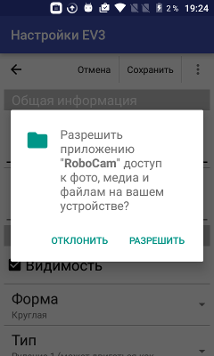
Inställningarna skrivs sedan direkt till en fil, och ett meddelande på skärmen visar var du hittar den. Som du ser sparas filen i nedladdningsmappen, hos mig «/storage/emulated/0/Download». Namnet börjar alltid med prefixet «RoboCam», följt av inställningarnas namn och dagens datum. Om filnamnet skulle krocka, till exempel om du exporterar inställningarna en andra gång i rad, skrivs den tidigare filen inte över; i stället skapas en andra fil i samma mapp med suffixet 2 i namnet, sedan suffixet 3 och så vidare.
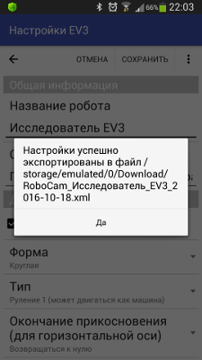
Observera att inställningarna skrivs till filen tillsammans med osparade ändringar du har gjort. Om du till exempel öppnar inställningarna «EV3 Explorer», ändrar robotens namn till «Min EV3 Explorer», exporterar inställningarna till en fil och sedan stänger inställningarna utan att spara, innehåller filen namnet «Min EV3 Explorer», medan själva inställningarna behåller «EV3 Explorer».
Skicka robotinställningar
Nu lär vi oss att skicka inställningar till en annan telefon via Bluetooth eller med e-post. Precis som vid export öppnar du de robotinställningar du behöver, trycker på knappen med tre punkter uppe till höger och väljer «Skicka» i menyn.
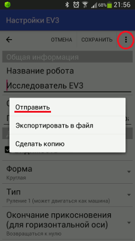
Om du har Android 6 eller senare kan du få en begäran om tillåtelse att komma åt telefonens delade mappar, se bilden nedan. Som regel behöver du bara ge tillståndet en gång; Android kommer ihåg ditt val. Tryck på «TILLÅT».
Därefter visas en dialogruta där du väljer enhet eller app att skicka filen med. Alla möjliga alternativ visas inte, bara de som kan skicka en XML-fil med inställningar. Dialogrutan på bilden nedan ser olika ut i olika Android-versioner. Välj hur du vill skicka inställningsfilen och fortsätt beroende på ditt val och din Android-version. Mer om att skicka filer i Android finns i din enhets bruksanvisning.
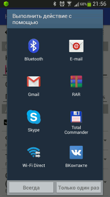
Observera att inställningarna skickas tillsammans med osparade ändringar du har gjort. Om du till exempel öppnar inställningarna «EV3 Explorer», ändrar robotens namn till «Min EV3 Explorer», skickar inställningarna och sedan stänger dem utan att spara, får den skickade filen robotnamnet «Min EV3 Explorer», medan själva inställningarna behåller «EV3 Explorer».
Tänk också på att filen som skickas sparas i mappen «/storage/emulated/0/.robocam». Om du ändrar inställningarna och skickar dem igen utan att vänta på att den första sändningen blir klar skrivs filen över, och de ändrade inställningarna kan då skickas två gånger.
Skapa en kopia av inställningar
Du kan vilja kopiera inställningar om du gör inställningar för en ny robot utifrån befintliga. Att skapa en kopia är mycket enkelt. Precis som vid export öppnar du de robotinställningar du behöver, trycker på knappen med tre punkter uppe till höger och väljer «Skapa kopia» i menyn.
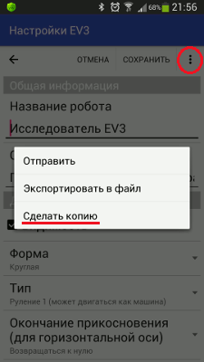
Inställningarna kopieras direkt, och du ser ett meddelande om det. Tillbaka i listan över inställningar hittar du kopian.
Importera inställningar
Att importera inställningar är mycket enkelt. Säg att du har laddat ner en fil och lagt den i nedladdningsmappen «/storage/emulated/0/Download». Öppna listan över robotinställningar och tryck på knappen med tre punkter uppe till höger. I menyn som visas väljer du «Importera från fil».
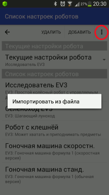
Om du har Android 6 eller senare kan du få en begäran om tillåtelse att komma åt telefonens delade mappar, se bilden nedan. Som regel behöver du bara ge tillståndet en gång; Android kommer ihåg ditt val. Tryck på «TILLÅT».
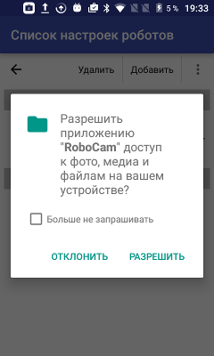
Därefter visas en navigator för ditt filsystem. Använd den för att hitta den inställningsfil du vill importera. Tryck på mappar för att öppna dem. Använd pilen eller telefonens Bakåt-knapp för att lämna en mapp. Knappen «Avbryt» stänger navigatorn direkt.
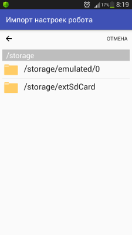
När du har hittat inställningsfilerna väljer du den som ska importeras.
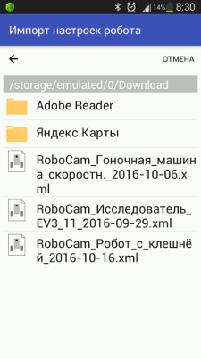
Inställningarna importeras direkt, ett meddelande visas, och du ser dem överst i listan. Som du ser har siffran 2 lagts till i namnet. Om du importerar samma inställningar igen läggs siffran 3 till, och så vidare. Efter importen kan inställningarna användas.
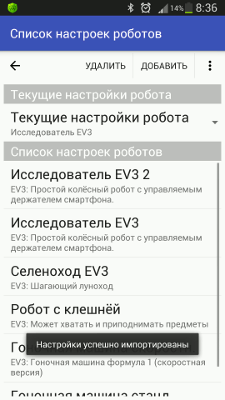
Nu när vi vet hur man importerar inställningar finns här färdiga inställningar för några robotar. Det finns också videor som visar hur man styr robotarna med dessa inställningar.
Inställningar för att styra racerbilen Formel 1 EV3
De här inställningarna har tre styrspakar. De två första är en vertikal och en horisontell styrspak: den ena får bilens bakhjul att snurra och den andra fungerar som ratt. Den tredje styrspaken är ett andra sätt att köra: med den styr du hastighet och svängar samtidigt. Det är avsiktligt tre styrspakar så att du kan förstå hur växlingen mellan styrspakarna 1-2 och 3-4 fungerar. Jag fäste telefonen med två vinkelbeslag och två gummiband så att framhjulen syns i telefonens kamera, vilket gör det lättare att känna bilens mått.
Inställningsfiler för bilens standardversion och snabbversion finns listade nedan:
| RoboCam-inställningar för racerbilen Formel 1 EV3 | |
RoboCam-inställningar för racerbilen Formel 1 EV3.
|
|
| 22.10.2016 892 B 2590 |
| RoboCam-inställningar för racerbilen Formel 1 EV3 (snabbversion) | |
RoboCam-inställningar för racerbilen Formel 1 EV3 (snabbversion). |
|
| 22.10.2016 900 B 2581 |
Bygganvisningen och beskrivningen av racerbilen finns i originalartikeln «Racerbil Formel 1 EV3» (på ryska).
Inställningar för att styra roboten med klo
För klorobboten finns en rund styrspak och pilar. Den runda styrspaken styr robotens rörelser, det vill säga hjulen, och pilarna styr klon. Jag fäste telefonen med några extra delar så att klon syns i kameran. Då ser man direkt vad jag greppar och hur.
Här är inställningsfilen för klorobboten:
| RoboCam-inställningar för EV3-klorobboten | |
RoboCam-inställningar för EV3-klorobboten. |
|
| 22.10.2016 533 B 2775 |
Bygganvisningen och beskrivningen av klorobboten finns i originalartikeln «Robot med klo LEGO EV3» (på ryska).
Inställningar för att styra Selenokhod EV3 (månbil)
Att köra Selenokhod är lite mer komplicerat än de tidigare robotarna. Styrspakarna här är pilar. Den första styrspaken skickar bara vidare beröringskoordinaterna till EV3-enheten (till dess brevlådor), och ett särskilt skrivet program inuti EV3 bearbetar sedan koordinaterna. För att roboten ska röra sig måste du därför köra programmet SelenokhodFPV.ev3 på den innan du ansluter RoboCam till roboten. Videon visar också en lokal anslutning till RoboCam-servern, det vill säga från samma telefon.
Inställningsfilen och EV3-programmet finns listade nedan:
| RoboCam-inställningar för att styra Selenokhod EV3 | |
RoboCam-inställningar för att styra Selenokhod EV3. |
|
| 22.10.2016 382 B 2518 |
| Hjälpprogram för att styra Selenokhod EV3 med RoboCam | |
Hjälpprogram för att styra Selenokhod EV3 med RoboCam. För att köra programmet krävs programvaran LEGO Mindstorms Education EV3 version 1.1.1 eller senare. |
|
| 22.10.2016 4.56 KB 2193 |
Bygganvisningen och beskrivningen av Selenokhod EV3 finns i originalartikeln «Selenokhod» (på ryska).
Alla RoboCam-versioner
- v1.4.2 Förvandla en smartphone till fjärrkontroll för roboten med RoboCam
- v1.3.1 Bygg förstapersonsstyrning för en Arduino-robot
- v1.2 RoboCam – styr roboten i förstaperson med datorns tangentbord
- v1.1 Importera, exportera, kopiera och skicka robotinställningar i RoboCamdu är här
- v1.0 Styr en LEGO Mindstorms EV3-robot i förstaperson